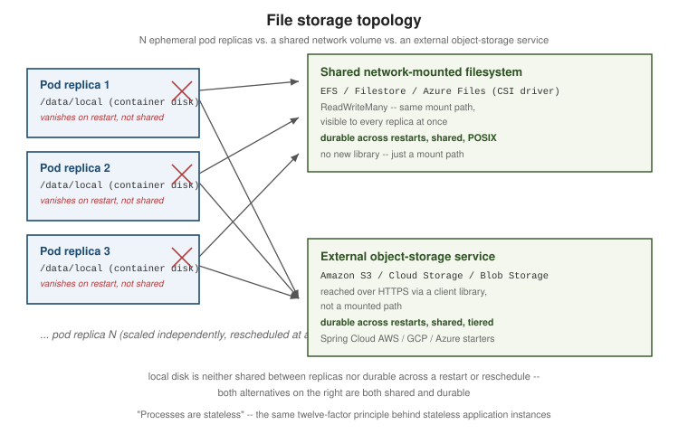

File Storage & Object Stores
|
This content was generated with the assistance of AI and should be verified against the official documentation before being relied on in production. |
Uploaded files, generated reports, exported spreadsheets, user avatars — any Spring Boot application eventually needs to persist a blob of bytes somewhere that isn’t the relational database. This page covers where that somewhere is once the application no longer runs as a single, long-lived instance with its own disk: two alternatives that both survive a restart and are visible to every running instance at once — a network-mounted filesystem (Amazon EFS, Google Cloud Filestore, Azure Files) and object storage (Amazon S3, Google Cloud Storage, Azure Blob Storage) — how to choose between them, how to place data in the right storage tier, and how to keep the application code from being welded to a single cloud provider.
Why ephemeral local disk doesn’t work here
A Spring Boot application deployed to a modern container platform (Amazon EKS, Google GKE, Azure AKS) rarely runs as one process on one machine. It runs as N horizontally-scaled, ephemeral pod replicas, each scheduled wherever the cluster has capacity, killed and rescheduled on a rolling deploy, a node drain, or a crash, and scaled up or down independently of any single instance’s own state. Two consequences follow directly from that:
-
Local disk does not survive a restart. Whatever a pod wrote to its own container filesystem — or even to an
emptyDirvolume — is gone the moment Kubernetes reschedules that pod onto a new container, whether that reschedule was voluntary (a deploy) or not (an eviction, a node failure). -
Local disk is not shared between replicas. Pod replica 2 has no way to read a file that pod replica 1 wrote to its own local disk — there is no shared namespace between them, so a load balancer that happens to route the next request to a different replica simply won’t find the file.
That means ordinary blocking file I/O — java.io.File, java.nio.file.Path, or a multipart upload’s
MultipartFile.transferTo(File) — writing to local/container disk cannot be trusted to persist anything that
must outlive the request that created it or be visible to a different replica than the one that wrote it.
This is exactly the same "Processes are stateless" twelve-factor principle already stated in
Cloud-Native Batch's twelve-factor table: "Local disk
vanishes when the pod does. Stage files in object storage, and keep the only durable state in the
JobRepository." That page applies the principle to a batch job’s JobRepository; this page applies the same
principle to everything else an application stores as a blob of bytes — and covers the two ways to give that
storage back the durability and sharing that local disk lacks.

The rest of this page covers the two ways to fill that gap: mounting a managed network filesystem into the pods (so existing file-based code keeps working unchanged), or writing to an object-storage service through a client library (the simpler, more common choice for new code).
Network-mounted filesystems
For code that genuinely expects a real, mounted filesystem path — an existing library that only accepts a
File/Path, a MultipartFile.transferTo(File) call inherited from legacy code, or several processes that need
POSIX-style shared access to the same files — the fix is to mount a managed network filesystem into the
Kubernetes nodes/pods through each cloud’s CSI (Container Storage Interface) driver. Application code changes
nothing: it keeps calling File/Path/MultipartFile.transferTo() exactly as before, pointed at a mount path
that now happens to be backed by network storage instead of the node’s own disk. No new library, no new
dependency — only Kubernetes-side configuration (a StorageClass, a PersistentVolumeClaim, and a volume mount
in the pod spec).
Amazon EFS (AWS)
Amazon EFS is a managed NFSv4.1 filesystem, mounted
into EKS pods through the aws-efs-csi-driver. Because
NFS is a genuinely shared, network-attached filesystem (not a per-availability-zone block device like EBS), EFS
supports ReadWriteMany access out of the box — many pods, across many nodes and availability zones, reading
and writing the same files concurrently.
The driver supports two provisioning modes:
-
Dynamic provisioning — the driver creates a new EFS access point per
PersistentVolumeClaimautomatically, each access point scoped to its own subdirectory and POSIX user/permissions within one underlying EFS filesystem. -
Static provisioning — a
PersistentVolumereferences an EFS filesystem ID (and, optionally, an access point ID) that already exists, created and managed outside Kubernetes.
The driver’s IAM role needs the AWS-managed AmazonEFSCSIDriverPolicy policy attached so it can create/describe
access points and mount targets on the application’s behalf — typically granted through IAM Roles for Service
Accounts (IRSA), so the driver’s own pods assume that role rather than the policy being attached to every node’s
instance profile:
aws iam attach-role-policy \
--role-name AmazonEKS_EFS_CSI_DriverRole \
--policy-arn arn:aws:iam::aws:policy/service-role/AmazonEFSCSIDriverPolicyOne further shortcut: pods running on AWS Fargate mount EFS volumes automatically through the underlying
Fargate infrastructure, without the aws-efs-csi-driver being installed in the cluster at all.
For how EFS compares with EBS and the other AWS block and file options, see Block and File Storage on AWS.
Google Cloud Filestore
Google Cloud Filestore is Google Cloud’s managed NFS service,
mounted into GKE pods through the
Filestore CSI
driver. Autopilot clusters enable it by default; on a Standard cluster it must be turned on explicitly
(gcloud container clusters update --update-addons=GcpFilestoreCsiDriver=ENABLED), or a StorageClass
referencing filestore.csi.storage.gke.io will have no provisioner and its PersistentVolumeClaim`s will sit in
`Pending. Like EFS, it is ReadWriteMany — built to be read and written concurrently from many pods at once.
Filestore instances can be provisioned either dynamically (a StorageClass referencing the Filestore CSI
provisioner creates a new Filestore instance per claim automatically) or pre-provisioned (a PersistentVolume
statically references an existing Filestore instance). Filestore also supports multishares: allocating
several smaller, independent volumes carved out of one larger backing Filestore instance, which is more
cost-effective than provisioning a whole dedicated instance per application when several workloads each only
need a modest amount of shared storage.
For how Filestore compares with Persistent Disk and Hyperdisk, see Block and File Storage on Google Cloud.
Azure Files
Azure Files is mounted into
AKS pods through the
azurefile-csi-driver, which supports both the
SMB and NFSv4.1 protocols depending on the Azure Files share type chosen — SMB shares are readable from
Windows and Linux alike, while NFS shares behave like a standard POSIX filesystem, closer to EFS/Filestore.
Either protocol supports ReadWriteMany. Unlike EFS and Filestore, no separate driver install is normally
required: AKS 1.21 and later installs and manages the azurefile-csi-driver by default, so the
file.csi.azure.com provisioner is available out of the box.
Kubernetes example: mounting Amazon EFS
The three pieces below — a StorageClass, a PersistentVolumeClaim, and a `Deployment’s volume mount — are
the same shape regardless of which cloud’s CSI driver is in play; only the provisioner name and a handful of
parameters change. This example uses dynamic provisioning against Amazon EFS:
apiVersion: storage.k8s.io/v1
kind: StorageClass
metadata:
name: efs-sc
provisioner: efs.csi.aws.com
parameters:
provisioningMode: efs-ap # provision a new EFS access point per claim
fileSystemId: fs-0123456789abcdef0
directoryPerms: "700"apiVersion: v1
kind: PersistentVolumeClaim
metadata:
name: uploads-efs-claim
spec:
accessModes:
- ReadWriteMany # many pods, many nodes, at once
storageClassName: efs-sc
resources:
requests:
storage: 10Gi # EFS ignores the requested size; a value is still requiredapiVersion: apps/v1
kind: Deployment
metadata:
name: file-storage-demo
spec:
replicas: 3
selector:
matchLabels:
app: file-storage-demo
template:
metadata:
labels:
app: file-storage-demo
spec:
containers:
- name: app
image: example/file-storage-demo:1.0.0
volumeMounts:
- name: uploads
mountPath: /data/uploads
volumes:
- name: uploads
persistentVolumeClaim:
claimName: uploads-efs-claimEvery one of the three Deployment replicas above mounts the same underlying EFS filesystem at
/data/uploads — a file one replica writes there is immediately visible to the other two, and none of them
lose it on a restart. The same shape applies unchanged to Google Cloud Filestore
(provisioner: filestore.csi.storage.gke.io) and Azure Files
(provisioner: file.csi.azure.com), each with its own StorageClass parameters for the underlying managed
service; the Spring Boot application itself needs no special library for any of the three — it just reads and
writes files under the mounted path exactly as it always has.
Object storage client libraries
For the more common case — user uploads, generated reports, exported files, static assets — object storage is
usually the better fit than a mounted network filesystem: no StorageClass/PersistentVolumeClaim to manage,
effectively unlimited capacity, built-in storage tiers and lifecycle policies (see "Storage access tiers" below),
and a well-supported Spring starter per provider that auto-configures a client bean ready to inject.
Amazon S3 (Spring Cloud AWS)
Spring Cloud
AWS's S3 starter auto-configures both a low-level S3Client and a higher-level S3Template that wraps common
upload/download operations:
<dependency>
<groupId>io.awspring.cloud</groupId>
<artifactId>spring-cloud-aws-starter-s3</artifactId>
</dependency>@Service
public class ReportStorageService {
private final S3Template s3Template;
public ReportStorageService(S3Template s3Template) {
this.s3Template = s3Template;
}
public void upload(String bucket, String key, InputStream content) {
s3Template.upload(bucket, key, content);
}
public InputStream download(String bucket, String key) {
return s3Template.download(bucket, key).getInputStream();
}
}Verify the current spring-cloud-aws-starter-s3 artifact id and version against the
Spring Cloud AWS reference
documentation before publishing — like every fast-moving cloud SDK on this page, its exact API surface and
managed BOM version can move between minor releases.
For buckets, storage classes and bucket security on AWS itself, see S3 Object Storage.
Google Cloud Storage (Spring Cloud GCP)
Spring Cloud
GCP's storage starter auto-configures a com.google.cloud.storage.Storage bean, and additionally registers a
gs:// protocol resolver so Spring’s own Resource abstraction (see "Avoiding vendor lock-in" below) works
against Cloud Storage objects directly:
<dependency>
<groupId>com.google.cloud</groupId>
<artifactId>spring-cloud-gcp-starter-storage</artifactId>
</dependency>@Service
public class ReportStorageService {
private final Storage storage;
public ReportStorageService(Storage storage) {
this.storage = storage;
}
public void upload(String bucket, String object, byte[] content) {
BlobId blobId = BlobId.of(bucket, object);
storage.create(BlobInfo.newBuilder(blobId).build(), content);
}
public byte[] download(String bucket, String object) {
return storage.readAllBytes(BlobId.of(bucket, object));
}
}As with the AWS starter, verify the current spring-cloud-gcp-starter-storage artifact id/version against the
Spring Cloud GCP reference
documentation before publishing.
For buckets, storage classes and locations on Google Cloud itself, see Cloud Storage.
Azure Blob Storage (Spring Cloud Azure)
Spring Cloud Azure’s Storage Blob starter auto-configures a com.azure.storage.blob.BlobServiceClient, and also
registers an Azure-specific Resource protocol resolver (azure-blob://container/blob) the same way the GCP
starter does for gs://:
<dependency>
<groupId>com.azure.spring</groupId>
<artifactId>spring-cloud-azure-starter-storage-blob</artifactId>
</dependency>@Service
public class ReportStorageService {
private final BlobServiceClient blobServiceClient;
public ReportStorageService(BlobServiceClient blobServiceClient) {
this.blobServiceClient = blobServiceClient;
}
public void upload(String container, String blobName, InputStream content, long length) {
blobServiceClient.getBlobContainerClient(container)
.getBlobClient(blobName)
.upload(content, length, true); // overwrite=true; the 2-arg overload throws if the blob already exists
}
public InputStream download(String container, String blobName) {
return blobServiceClient.getBlobContainerClient(container)
.getBlobClient(blobName)
.openInputStream();
}
}Verify the current spring-cloud-azure-starter-storage-blob artifact id/version against the
Spring Cloud
Azure Storage reference documentation before publishing.
For a deeper walkthrough of Azure Blob Storage itself — containers, access tiers, lifecycle policies, SAS vs. Entra data-plane authorization — see Blob Storage and Storage Accounts.
Presigned URLs and SAS tokens
Every one of the three client libraries above routes bytes through the application server — the request body flows through the JVM on its way to the bucket, and the response body flows through it again on the way back. For a large upload or a public download, that is often unnecessary load: all three providers let the application instead hand the client a short-lived, cryptographically-signed URL that talks directly to the bucket/container, bypassing the application entirely for the actual bytes:
-
Amazon S3 presigned URLs — generated via
S3Presigner, valid for a caller-chosen duration, granting a specific operation (GetObject/PutObject) on a specific key without the caller needing AWS credentials at all. -
Azure Blob SAS tokens — a Shared Access Signature scoped to a container or blob, an expiry, and a set of permissions (read/write/list/…), appended as a query string to an otherwise ordinary blob URL.
-
Google Cloud Storage signed URLs — the same idea, generated via the
Storageclient’ssignUrl(…)method.
In every case, the application server’s role shrinks to issuing the signed URL (a cheap, fast operation) — the client then uploads or downloads directly against the object-storage service using that URL. For example,
generating a time-limited S3 download URL with S3Presigner needs no S3 client credentials to be shared with
the caller at all:
@Service
public class DownloadLinkService {
private final S3Presigner presigner;
public DownloadLinkService(S3Presigner presigner) {
this.presigner = presigner;
}
public URL generateDownloadUrl(String bucket, String key) {
GetObjectRequest getObjectRequest = GetObjectRequest.builder()
.bucket(bucket)
.key(key)
.build();
GetObjectPresignRequest presignRequest = GetObjectPresignRequest.builder()
.signatureDuration(Duration.ofMinutes(15))
.getObjectRequest(getObjectRequest)
.build();
return presigner.presignGetObject(presignRequest).url();
}
}Avoiding vendor lock-in: cloud-agnostic abstractions
Every example so far uses a provider-specific SDK: S3Template, Storage, BlobServiceClient. That is a
deliberate trade-off, not an oversight — a provider-specific SDK exposes that provider’s full feature set
(presigned URLs, fine-grained tiering, provider-specific metadata), at the cost of tying the code to exactly one
cloud. The three options below trade some of that feature access back for varying degrees of portability across
providers.
Spring’s Resource/WritableResource abstraction. Each of the three starters above also registers a
org.springframework.core.io.Resource protocol resolver for its own URI scheme — s3:// (Spring Cloud AWS),
gs:// (Spring Cloud GCP), and azure-blob:// (Spring Cloud Azure). That means the same Java code, written
once against Spring’s own Resource/WritableResource interfaces, works unchanged regardless of which of the
three schemes a given @Value happens to point at:
@Component
public class ReportStorageService {
@Value("${report.storage.location}")
private Resource storageResource; // e.g. s3://reports-bucket/2026/report.pdf
// or gs://reports-bucket/2026/report.pdf
// or azure-blob://reports-container/2026/report.pdf
public void write(byte[] content) throws IOException {
try (OutputStream out = ((WritableResource) storageResource).getOutputStream()) {
out.write(content);
}
}
public byte[] read() throws IOException {
try (InputStream in = storageResource.getInputStream()) {
return in.readAllBytes();
}
}
}Switching report.storage.location from s3://… to gs://… changes zero lines of this class — but each
scheme still needs its own starter dependency and protocol-resolver bean on the classpath, so switching providers
in practice means a dependency and configuration change, not a fully zero-change swap.
Apache jclouds' BlobStore. Apache jclouds goes further: one
dependency and one Java API (org.jclouds.blobstore.BlobStore) cover Amazon S3, Azure Blob Storage, Google Cloud
Storage, and roughly thirty other backends, with the provider selected at configuration time rather than
compile time:
<dependency>
<groupId>org.apache.jclouds</groupId>
<artifactId>jclouds-blobstore</artifactId>
</dependency>
<dependency>
<groupId>org.apache.jclouds.provider</groupId>
<artifactId>aws-s3</artifactId> <!-- or azureblob / google-cloud-storage -->
</dependency>BlobStoreContext context = ContextBuilder.newBuilder("aws-s3") // "azureblob", "google-cloud-storage", ...
.credentials(accessKey, secretKey)
.buildView(BlobStoreContext.class);
BlobStore blobStore = context.getBlobStore();
Blob blob = blobStore.blobBuilder(key)
.payload(content)
.contentLength(content.length)
.build();
blobStore.putBlob(bucket, blob);
Blob downloaded = blobStore.getBlob(bucket, key);
PageSet<? extends StorageMetadata> objects = blobStore.list(bucket); // common listing API tooThis is the strongest actual portability of the three options — the same compiled code runs against any
supported backend by changing only the ContextBuilder.newBuilder(…) provider string and its credentials.
The cost is that provider-specific features fall outside the common API: storage tiers/lifecycle rules and
presigned URLs/SAS tokens each need a provider-specific escape hatch, not a BlobStore method.
Spring Content. Spring Content takes a different angle
entirely: a Spring-Data-style ContentStore/Store abstraction that associates a blob of content with a JPA or
MongoDB entity, swappable between filesystem, S3, Azure, and MongoDB GridFS backends purely through a dependency
choice — with no call-site code change at all:
<dependency>
<groupId>com.github.paulcwarren</groupId>
<artifactId>spring-content-s3-boot-starter</artifactId> <!-- or the filesystem/Azure equivalent -->
</dependency>public interface DocumentContentStore extends ContentStore<Document, UUID> {
}@Service
public class DocumentService {
private final DocumentContentStore contentStore;
public DocumentService(DocumentContentStore contentStore) {
this.contentStore = contentStore;
}
public void attachContent(Document document, InputStream content) {
contentStore.setContent(document, content); // backend is chosen entirely by the starter on the classpath
}
}Switching DocumentService from a filesystem backend to S3 — or to Azure Blob Storage, or to MongoDB’s GridFS — is, in principle, a matter of swapping spring-content-s3-boot-starter for spring-content-fs-boot-starter,
spring-content-azure-boot-starter, or spring-content-mongo-boot-starter on the classpath: setContent/
getContent/unsetContent at the call site never change. That is a stronger portability guarantee at the call
site than either of the other two options above, at the cost of the coupling described next.
Two things are worth being explicit about before reaching for it: Spring Content is a community-maintained
project (paulcwarren/spring-content), not an official Spring or Pivotal project, so its release cadence and
support model differ from Spring Cloud AWS/GCP/Azure; and it is the most opinionated option of the three — content is modeled as a property of a Spring Data JPA/MongoDB entity, which is a good fit only when the content
already belongs to an entity that way. Verify the current starter artifact ids and supported backends against
Spring Content’s own GitHub/reference docs before publishing, the
same caveat as the other libraries on this page.
Integration testing without real cloud accounts
Every client-library example above wants a real bucket/container behind it. For an integration test, running against the actual cloud service is slow, costs money, and needs live credentials in CI — the usual fix is a local, disposable emulator started as a Testcontainers container per test run instead.
MinIO and LocalStack are no longer the free, no-account defaults they used to be. MinIO’s Community
Edition — long the default S3-compatible Docker image for this purpose — stopped publishing binaries/Docker
images in October 2025 and its minio/minio repository was archived in April 2026; existing images still run,
but with no further updates or security patches. LocalStack followed a similar path: since March 23, 2026, the
localstack/localstack image requires a LocalStack account and an auth token to start at all — it still offers
a free tier for non-commercial use, but it is no longer a plain, anonymous docker pull. Neither is unusable,
but neither is the drop-in, zero-signup dependency it once was, so verify each project’s current terms before
adopting it for CI.
Three actively-maintained, no-account emulators cover this page’s three providers instead, one per cloud, each with an official or actively-maintained Testcontainers module:
-
Amazon S3 — Adobe S3Mock. A purpose-built S3 API mock (not a general AWS emulator), with a dedicated Testcontainers module and a JUnit 5 extension:
<dependency> <groupId>com.adobe.testing</groupId> <artifactId>s3mock-testcontainers</artifactId> <scope>test</scope> </dependency>@Testcontainers class ReportStorageServiceIT { @Container static S3MockContainer s3Mock = new S3MockContainer("latest").withInitialBuckets("reports"); // point S3Client/S3Template at s3Mock.getHttpEndpoint() instead of the real AWS endpoint } -
Google Cloud Storage — fake-gcs-server. An actively-maintained GCS API emulator; the Java Testcontainers module is a third-party (Aiven-maintained) integration rather than an official
testcontainers-javamodule:<dependency> <groupId>io.aiven</groupId> <artifactId>testcontainers-fake-gcs-server</artifactId> <scope>test</scope> </dependency> -
Azure Blob Storage — Azurite. Microsoft’s own official Azure Storage emulator (Blob, Queue, and Table), with an official
testcontainers-javamodule:<dependency> <groupId>org.testcontainers</groupId> <artifactId>azure</artifactId> <scope>test</scope> </dependency>@Container static AzuriteContainer azurite = new AzuriteContainer("mcr.microsoft.com/azure-storage/azurite:latest");
Point the Spring Cloud AWS/GCP/Azure starter’s endpoint override property at the running container instead of
the real regional endpoint (each starter exposes one — e.g. Spring Cloud AWS’s spring.cloud.aws.s3.endpoint),
so the same S3Template/Storage/BlobServiceClient code from the sections above runs unmodified against the
emulator in a test and against the real service in production. Verify each library’s current Maven coordinates
and supported API surface against its own repository before adopting it, the same caveat as every other library
on this page.
Storage access tiers
Every one of the three providers lets the same object storage service hold data at different storage tiers/classes, each trading read latency and per-request/retrieval cost against per-gigabyte storage cost. Choosing the right tier — and moving data between tiers automatically as it ages — matters as much as choosing the right storage service in the first place.
Fast / CDN-backed access
For frequently-read, latency-sensitive content (public assets, downloadable files served to many users), placing a CDN in front of the bucket/container caches responses at edge locations close to the reader instead of serving every request from the origin region:
-
Amazon CloudFront in front of an S3 bucket (or S3 Transfer Acceleration, which speeds up uploads into S3 over Amazon’s edge network rather than caching downloads).
-
Google Cloud CDN in front of a Cloud Storage bucket.
-
Azure Front Door or Azure CDN in front of a Blob Storage container.
Normal access
The default tier for actively-used files that don’t need CDN-level latency but are still read and written routinely: S3 Standard, GCS Standard, and the Azure Blob Hot tier. Unless a file is specifically identified as rarely accessed or public-facing, this is the tier it should start in.
Storage-only / archive access
For data that must be retained but is rarely, if ever, read back — compliance archives, old backups, cold audit logs — an archive tier trades much cheaper per-gigabyte storage for slower and/or costlier retrieval:
-
Amazon S3 Glacier — offered in three sub-tiers with different retrieval-time/cost trade-offs: Instant Retrieval (millisecond access, cheaper than Standard but pricier than the other two Glacier tiers), Flexible Retrieval (minutes to hours), and Deep Archive (the cheapest storage, retrieval measured in hours).
-
Google Cloud Storage Coldline/Archive classes.
-
Azure Blob Cool/Cold/Archive tiers.
Crucially, none of the three expects data to be manually moved between tiers as it ages: each provider supports a lifecycle policy (S3 Lifecycle rules, GCS Object Lifecycle Management, Azure Blob Storage lifecycle management) that automatically transitions an object from Standard/Hot to a colder tier — or deletes it outright — once it matches an age or access-pattern rule, so the tier transition itself needs no application code at all.
The table below maps the three categories above onto each provider’s concrete storage class/tier name:
| Category | AWS | Google Cloud | Azure |
|---|---|---|---|
Fast / CDN-backed |
CloudFront in front of S3 (S3 Transfer Acceleration for uploads) |
Cloud CDN in front of a GCS bucket |
Front Door / Azure CDN in front of Blob Storage |
Normal |
S3 Standard |
Standard storage class |
Blob Storage Hot tier |
Storage-only / archive |
S3 Glacier Instant Retrieval / Flexible Retrieval / Deep Archive |
Coldline / Archive storage classes |
Blob Storage Cool / Cold / Archive tiers |
Choosing an approach
Network-mounted filesystem vs. object storage. Reach for a network-mounted filesystem (EFS/Filestore/Azure
Files) when existing code genuinely needs a real filesystem path — a legacy library that only accepts
File/Path, POSIX semantics (file locking, directory listings, atomic renames), or several processes sharing
scratch space the way they would on a single shared disk. Reach for object storage as the simpler, more
cost-effective default for everything else — most new Spring Boot services have no such filesystem-shaped
requirement, and object storage avoids the extra StorageClass/PersistentVolumeClaim operational surface
entirely.
Provider-specific SDK vs. a cloud-agnostic abstraction. Use a provider-specific SDK/starter
(S3Template/Storage/BlobServiceClient) when the application targets exactly one cloud and needs that
provider’s full feature set — presigned URLs, fine-grained tier/lifecycle control, provider-specific metadata.
Reach for Spring’s Resource/WritableResource abstraction when the code should stay portable at the API
level even though its configuration and dependencies still change per provider. Reach for Apache jclouds'
BlobStore when true multi-cloud portability — a product actually deployed to more than one cloud, or one whose
target cloud isn’t fixed yet — outweighs needing every provider-specific feature through the common API. Reach
for Spring Content only when the stored content is already modeled as a Spring Data JPA/MongoDB entity and that
coupling is an acceptable trade for its backend-swappable convenience.
Picking a storage tier. Fast/CDN-backed for frequently-read, latency-sensitive or public assets; normal (Standard/Hot) as the default for actively-used files; archive for cold, rarely-accessed data, with a lifecycle policy automating the move once data ages past a defined threshold rather than moving it by hand.
For image and video uploads, direct-to-storage pre-signed URLs and background processing into variants and renditions, see Upload Pipelines, Queues and Jobs and the Spring Boot and Quarkus media pipeline.
For storing generated Word and Excel reports and serving them through a download link, see Exporting Reports from a Server.
References
-
GKE Filestore CSI driver and Google Cloud Filestore documentation
-
Google Cloud Storage classes and Object Lifecycle Management
-
Azure Blob Storage access tiers and Blob Storage lifecycle management
-
LocalStack’s 2026 pricing/packaging changes and MinIO Community Edition’s 2026 end-of-life — background for why MinIO/LocalStack are no longer this page’s recommendation